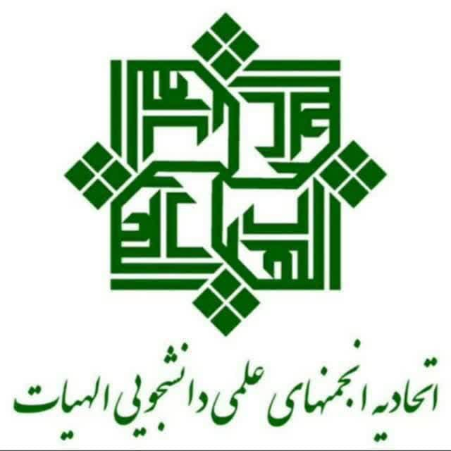
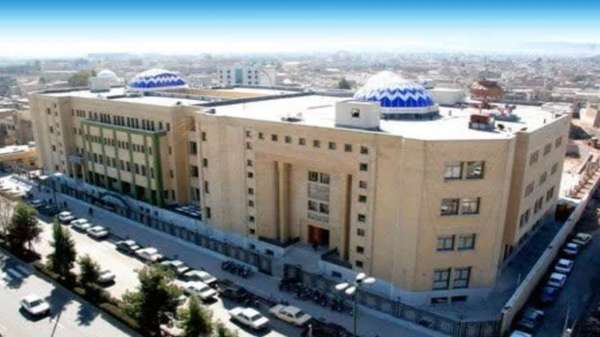
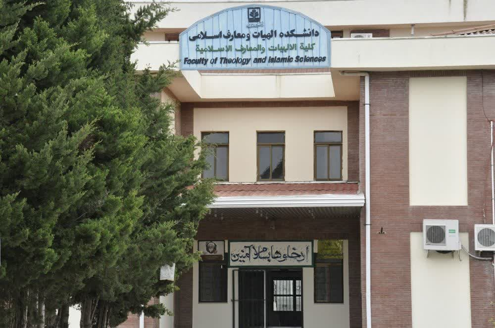
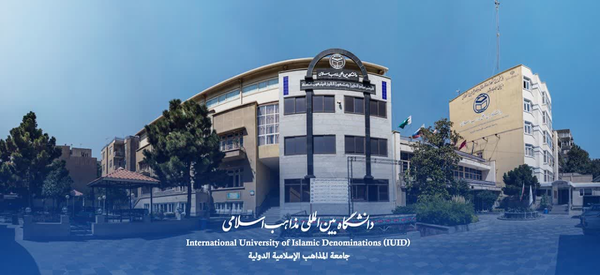
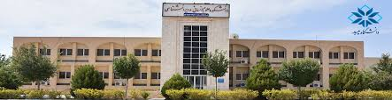

درباره ما
رویداد تدریس برتر یک رقابت علمی برای شناسایی و تقدیر از برترین شیوهها و دانشجویان مستعد تدریس برای اولین بار در حوزه علوم قرآن و حدیث است.
دکتر محسن رفعت
دانشیار علوم قرآن وحدیث دانشگاه حضرت معصومه(س)
دبیر علمی واستاد مشاور

فاطمه یزدیان فرد
دانشجوی کارشناسی علوم قرآن وحدیث دانشگاه حضرت معصومه(س)
طراح و دبیر اجرایی
فاطمه آقایی
دانشجوی کارشناسی ارشد علوم قرآن وحدیث دانشگاه حضرت معصومه(س)
دبیر روابط عمومی رویداد
زهرا سلطانعلی
دانشجوی کارشناسی علوم قرآن وحدیث دانشگاه حضرت معصومه(س)
عضو روابط عمومی رویداد
ریحانه شارعی
دانشجوی کارشناسی علوم قرآن وحدیث دانشگاه حضرت معصومه(س)
عضو روابط عمومی رویداد
دانشگاه حضرت معصومه (سلام الله علیها) قم

اتحادیه الهیات ایران
دانشگاه قم

دانشگاه تهران

دانشگاه علامه طباطبایی انجمن علوم قرآن و حدیث

دانشگاه جامعة المصطفی
مجتمع عالی بنت الهدی
دانشگاه اصفهان انجمن علوم قرآن و حدیث

دانشگاه مازندران انجمن علوم قرآن و حدیث
دانشگاه فردوسی مشهدانجمن علوم قرآن و حدیث

دانشگاه علوم ومعارف قرآن کریم مشهدانجمن علوم قرآن و حدیث

دانشگاه شاهد تهران

دانشگاه بین الملی مذاهب اسلامی
دانشگاه ایلام انجمن علوم قرآن و حدیث

دانشگاه بوعلی همدان

دانشگاه مبید
دانشگاه حکیم سبزواری